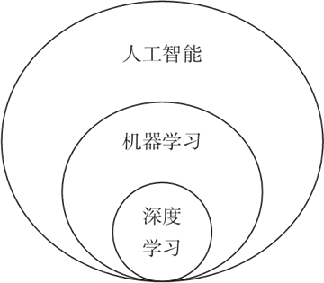
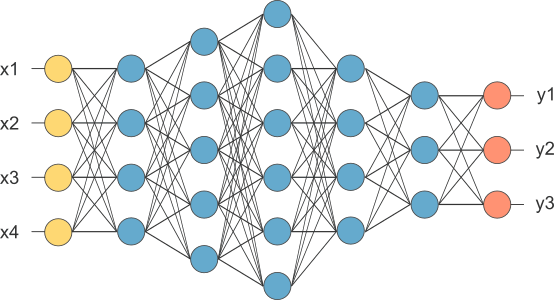

首页 > 编程笔记
机器学习、深度学习和人工智能三者的关系
机器学习、人工智能和深度学习都是最近很火的词，有的人用截然不同的态度评价它们，好像三者并无联系，有的人却认为它们不过是新瓶装旧酒，都是商家宣传推广的噱头。
这些看法未免有些片面，机器学习、人工智能和深度学习的目标都是让算法模拟“智能”，但层次范围不同。
用北京市的环线来形容三者的关系实在最形象不过了，如下图所示：
人工智能（Artificial Intelligence）涵盖范围最广，三环以内都可以叫人工智能，它关注的问题和方法也最杂，包括知识推理、逻辑规划以及机器人等方面。
机器学习（Machine Learning）住在二环，是人工智能的核心区域，也是当前发展最迅猛的一部分，子算法流派枝繁叶茂，但思想比较统一。
至于当下的网红——深度学习（Deep Learning），其实原本是从机器学习的神经网络子算法分支发展出来的一系列成果，知识体系一脉相承，只不过近年大出风头，干脆重新起了个名字“单飞”了。
但是我们人类就很容易解决这些问题，人类大脑不是根据固定的算法来推导的，而是根据以往的认知或者经验来推理。人工智能的目的也是如此，就是不给计算机编写固定的算法，让计算机根据已有的经验或者认知来帮助人们做事情。计算机的思维方式和人类相似，所以称为人工智能。
人工智能是最终目标，机器学习是实现目标的一种方案。
机器学习是一件很麻烦的事情，需要先搭建一个模型，这个模型包含了很多参数，然后把准备好的数据（包括正确的结果）输入到模型中，不断调整模型的参数，直到它非常接近或者完全符合正确的结果，这个时候我们就说模型训练好了。
机器学习的模型有很多种，已经有人帮我们开发好了，我们从中选择其一即可，这个不用担心。最要命的是数据，机器学习需要大量的数据才能训练好模型。人类看一两张猫的照片就认识猫了，但是机器学习需要看成千上万张照片。
如何收集大量有效的数据，是机器学习的重中之重，所以才有了爬虫，有了数据挖掘，有了数据清洗等分支。
CNN 模型是机器学习的高级玩法，更加接近真正的人工智能，所以人们称此为深度学习。说白了，深度学习就是机器学习的一个分支。
这些看法未免有些片面，机器学习、人工智能和深度学习的目标都是让算法模拟“智能”，但层次范围不同。
用北京市的环线来形容三者的关系实在最形象不过了，如下图所示：

图1：机器学习、深度学习和人工智能的关系
图1：机器学习、深度学习和人工智能的关系
人工智能（Artificial Intelligence）涵盖范围最广，三环以内都可以叫人工智能，它关注的问题和方法也最杂，包括知识推理、逻辑规划以及机器人等方面。
机器学习（Machine Learning）住在二环，是人工智能的核心区域，也是当前发展最迅猛的一部分，子算法流派枝繁叶茂，但思想比较统一。
至于当下的网红——深度学习（Deep Learning），其实原本是从机器学习的神经网络子算法分支发展出来的一系列成果，知识体系一脉相承，只不过近年大出风头，干脆重新起了个名字“单飞”了。
人工智能
人工智能的目的是让计算机模拟人类的思维，让它解决一些不能用代码描述的问题，比如判断一朵花是不是玫瑰、通过 CT 照片检测一个人的病情等，这些问题就不能用传统的编程方法解决，因为没有一个确定的公式，或者说没有一个确定的算法。但是我们人类就很容易解决这些问题，人类大脑不是根据固定的算法来推导的，而是根据以往的认知或者经验来推理。人工智能的目的也是如此，就是不给计算机编写固定的算法，让计算机根据已有的经验或者认知来帮助人们做事情。计算机的思维方式和人类相似，所以称为人工智能。
机器学习
人工智能是一个很美好的憧憬，那么，如何才能实现人工智能呢？答案就是让计算机不断地学习，也就是喂给它大量的数据，让它从数据中积累经验，逐渐形成认知。这就是机器学习。人工智能是最终目标，机器学习是实现目标的一种方案。
机器学习是一件很麻烦的事情，需要先搭建一个模型，这个模型包含了很多参数，然后把准备好的数据（包括正确的结果）输入到模型中，不断调整模型的参数，直到它非常接近或者完全符合正确的结果，这个时候我们就说模型训练好了。
机器学习的模型有很多种，已经有人帮我们开发好了，我们从中选择其一即可，这个不用担心。最要命的是数据，机器学习需要大量的数据才能训练好模型。人类看一两张猫的照片就认识猫了，但是机器学习需要看成千上万张照片。
如何收集大量有效的数据，是机器学习的重中之重，所以才有了爬虫，有了数据挖掘，有了数据清洗等分支。
深度学习
机器学习的模型是一个不断发展的过程，后来人们逐渐研究出了一种更加智能和通用的模型，就是卷积神经网络（CNN）。CNN 模拟人类大脑神经突触之间的连接，通过调整参数来模拟突触连接的强弱。

图2：卷积神经网络示意图（x 表示输入，y 表示输出）
图2：卷积神经网络示意图（x 表示输入，y 表示输出）
CNN 模型是机器学习的高级玩法，更加接近真正的人工智能，所以人们称此为深度学习。说白了，深度学习就是机器学习的一个分支。
总结
人工智能是最终的目标，就是让机器模拟人类的思维模式；机器学习是实现人工智能的一种途径，它有很多模型可以选择；深度学习是机器学习的一个分支，它使用了一种更加智能和通用的模型，就是卷积神经网络（CNN）。关注公众号「站长严长生」，在手机上阅读所有教程，随时随地都能学习。内含一款搜索神器，免费下载全网书籍和视频。

微信扫码关注公众号